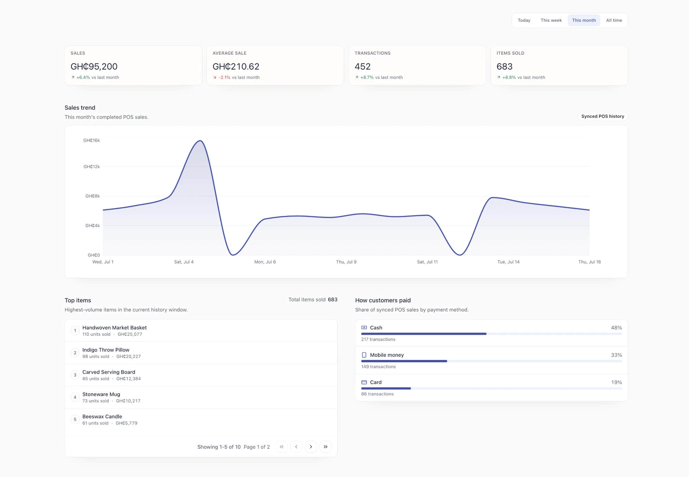
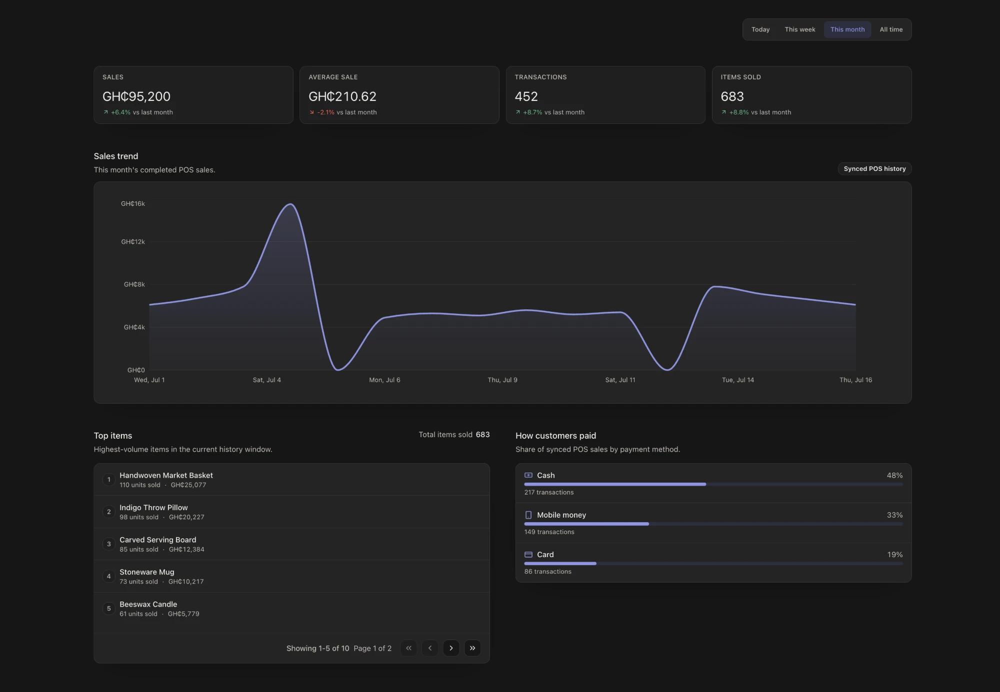

The operating problem
The day’s evidence lives in fragments.
In an owner-led retail business, the evidence of the day lives in different places: a register total, online orders, stock notes, physical receipts, staff memory, and a list of work still waiting for someone. Before the next decision can happen, the owner has to piece those fragments back together.
That reconstruction makes simple questions expensive: What sold? What changed in stock? Which cash or service issue is unresolved? What needs attention before the day can close?
Proving ground
Built with Wigclub. Live in production.
Athena runs the operating day at Wigclub , a retail and service business in Ghana: register sales, storefront orders, inventory, procurement, cash controls, and Daily Close. The register records cash, card, and mobile money tenders; online payments settle through Paystack.
Connectivity does not sit on the critical path of an in-person sale.
The engineering claims here trace back to the Athena repository : more than 650 test files across unit, component, and end-to-end suites, plus 40 more covering the delivery harness itself; four CI workflows, including scripted production rollback; and a static money-entry audit that fails validation whenever money is parsed outside the shared minor-unit helpers.
The product model
One operating record, shaped around the day.
Athena connects in-person and online sales with inventory, procurement, cash controls, services, and staff activity. The point is not one screen that swallows every domain. It is that the records keep enough shared context for the owner to follow the work from action to evidence.
- In-person and online selling create commerce records.
- Those sales connect to product and stock movement.
- Current stock and vendor context support procurement review.
- Cash controls, service work, staff activity, and open work contribute to the store-day record.
- The owner reviews that evidence and remains responsible for the next action.
Boundary: Athena is not yet a complete cross-domain command center. Several operating surfaces are connected by shared records and workflows, while the unified exception view is still being strengthened.
Connected operations
Start with today. Keep the history close.
Store Pulse shows the operator completed register activity (sales, transactions, and items sold) with comparison windows, the sales trend, the products moving, and how customers paid. This is the workspace itself.


The captured workspace reports sales, transactions, and items sold for the selected time window, draws a sales-trend history chart, lists the top products moving, and breaks down how customers paid. All figures come from a development build seeded with illustrative data and represent no business performance.
Athena’s reporting model recognizes completed in-person sales and fulfilled storefront orders while preserving which channel each record came from: one commerce history, with channel identity intact.
Resilient operations
The register records the work before it reports success.
Local-first was an operating-boundary decision. Wigclub’s register records a sale locally before reporting success, so a cloud round trip never decides whether checkout can continue. Offline continuity follows from that single operating path rather than being added as a separate fallback mode.
A provisioned, locally authorized register writes each cashier event to its durable local record before returning success, whether or not the browser appears online. A mobile money sale completed during an outage looks exactly like one completed on a healthy connection: the event is appended, the receipt is issued, and the register keeps selling. When connectivity returns, the terminal uploads its events in order.
- 01
Check local authority
Terminal integrity, staff identity, drawer authority, and durable on-device storage still matter.
- 02
Append local evidence
The register event exists before the cashier sees success.
- 03
Continue the operation
The local read model keeps the active register usable regardless of connectivity state.
- 04
Synchronize and reconcile
Ordered, idempotent upload maps local records to cloud records and surfaces conflicts for review.
The boundary is deliberately narrow: point of sale is Athena’s offline-first workflow, and Convex becomes the cloud source of truth after accepted projection. If last-known stock or permission evidence drifted while the register was offline, Athena preserves the completed sale and creates review work. It never rewrites the receipt or hides the history.
Engineering method
AI-assisted development needs a codebase that can explain itself.
I build Athena with AI agents, but not through prompt-in, patch-out work. The delivery system began as an audit of the repository against published harness-engineering practice and grew into a set of sensors: generated maps and a knowledge graph for orientation, diff-aware validation and runtime behavior scenarios for evidence, fail-closed freshness checks and review gates for accountability. When a failure escapes to CI, the fix lands with a new sensor, so the next contributor, human or agent, does not repeat it.
These safeguards make the repository more legible and reviewable for humans and agents; they do not create autonomous development, exhaustive runtime coverage, full test coverage, or guaranteed correctness. Human review and bounded authority remain part of the system.
Stack
How it’s built.
Athena is written in TypeScript end to end and runs on Bun. The operator workspace and the customer storefront are React applications built on the TanStack ecosystem — Router, Query, Table, and Form — with Tailwind CSS for styling. Convex is the cloud backend and the source of truth for the shared business record; Hono serves the HTTP surfaces. Online orders settle through Paystack. The repository is a monorepo whose packages cover the operator workspace and the customer storefront, with the delivery harness described below alongside them.
Athena is built for owner-led retail and service businesses, and it runs a real store today. If you run a shop and are curious whether it could fit your business, I’d genuinely like to hear about your operation — write me at kwami.nuh@gmail.com and I’ll walk you through what it does and what trying it would look like.
Current state
Real operating depth, with the limits left visible.
Athena is in active development. The useful distinction is not finished versus unfinished, but what the product can support now, what still needs validation, and what I am not claiming yet.
Works
Core retail loops
Point of sale, storefront checkout, orders, inventory, procurement, cash controls, Daily Close, staff workflows, and the Reports workspace run in production across the operator and customer systems.
Being validated
The clearest owner story
The cross-domain exception view and proactive guidance need more work. Reports answers what happened; it does not yet gather every exception into one place or tell the owner what to do next.
Not claimed
Outcomes the evidence cannot support
No revenue lift, time savings, adoption, growth, autonomous replenishment, demand forecast, or complete financial cockpit is claimed here.
Technical reflections
Deeper reading
These reflections go into the engineering decisions that carry the most weight, including the reversals and bugs that shaped them.